东城13处新建口袋公园亮相！就在你家门口！
来源：北京东城
“家门口有了这个口袋公园，下楼就有遛弯儿的地儿了，环境也好了”……今天上午，记者来到刚刚建成对外开放的香河园口袋公园看到，公园里已经有不少居民遛弯儿、赏花。这座总面积9450平方米的公园已经成为周边居民的热门遛弯儿地儿。
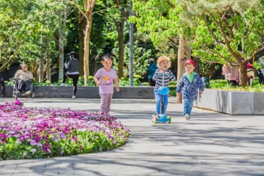除了香河园口袋公园，东城区校尉胡同西侧口袋公园、同仁医院口袋公园、磁器口口袋公园等13处、总面积达2.9万平方米的口袋公园，自去年9月陆续开工建设，到目前已全部完工，其中已经有11处口袋公园对外开放。
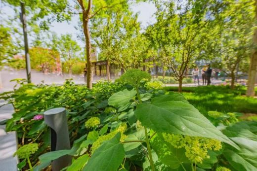据东城区园林绿化局规划发展科项目负责人张志鹏程介绍，口袋公园是规模较小的城市开放空间，对地块进行绿化种植，再配置活动场地、步道、座椅等便民设施，为周边居民服务，有效解决高密度城市中心区人们对公园的需求。过去，很多绿地都是不可步入式的，只能观赏，没法与花花草草亲密接触。而近些年，随着园林的发展，绿化要尽可能满足市民户外活动的需要，因此这13处口袋公园全部设计成可步入式的“亲自然”模式，市民可在绿地间、树林下穿行。 蔬菜、肉、蛋、奶、果在内的各种生活副食品也要依靠农村来供应城市。城市作为国家重点发展的对象，享受到许多农村没有的政策倾斜和福利优惠，饮食文化作为这方面的标志首先成为农村的人们向往的对象，人们用“吃商品粮的”来形象地表达对城市居民生活的羡慕。
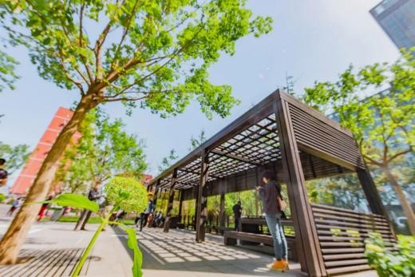张志鹏程表示，这13处口袋公园共分为三种不同的类型，位于东城区东北二环外侧香河园口袋公园就是绿化代征地建成的。“这是13处口袋公园中面积最大的。我们刚接手的时候，这里还是一片工地，有几处废弃的房屋。”
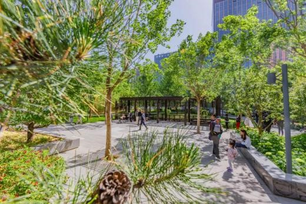记者注意到，这处口袋公园处处彰显着“漫步林下，健康生活”的理念，公园利用现状地形地势，营造多重植物层次景观。“公园里的植物在配植上选择高大乡土树种，配以适量的彩叶树种，突出秋季景观效果；中层植物着重突出观花观果等观赏效果，种植地被及花卉，增加底层植物层次。国槐、银杏、绣球、狼尾草在这个公园中都可以看到。”相关负责人介绍。
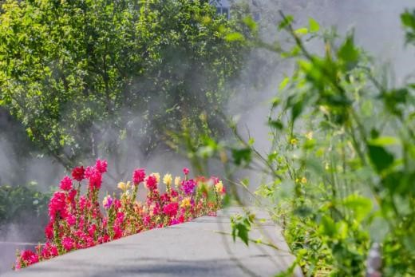同时，记者还注意到，该公园通过铺装地雕等多种方式突出场地所承载的文化内涵。沿主入口的石材台阶上雕刻了自来水的历史变迁说明。休闲广场地面铺装采用多种材料拼贴组合、变化丰富。运用激光影雕技术，在石材座椅上打印出自来水历史发展的相关图片信息。“香河园口袋公园所在的位置，紧邻北京历史上第一座水厂——东直门水厂，距离北京自来水博物馆仅百米之遥。”相关负责人说。
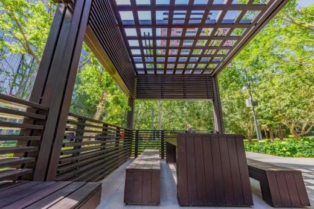记者了解到，除了由绿化代征地改建而成的口袋公园外，还有一部分口袋公园为拆违后利用腾退空间改建成的，比如位于崇文门路口东北角的同仁医院口袋公园、位于广渠门桥西北角的广渠门口袋公园等。第三种类型的口袋公园，是在现有绿地基础上改造提升而成的，比如位于东二环北京市人民检察院周边的检察院外侧绿地、天坛东门口袋公园等。
东城区新增口袋公园位置表
1、校尉胡同西侧“口袋公园”：东临校尉胡同，西临原项目地内的红楼、中央美术学院教授楼，北临帅府园胡同，南临东单三条，项目总用地面积3230.7平方米。（近期将投入使用）
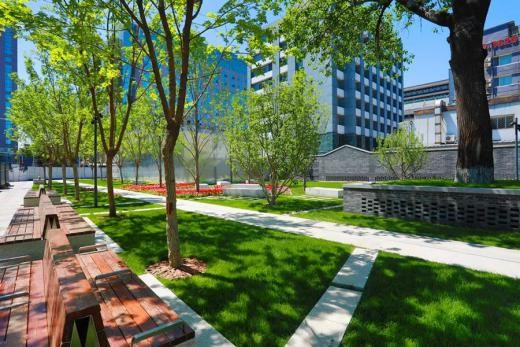2、检察院外侧绿地：位于东二环北京市人民检察院周边，绿地由检察院北侧和东侧绿地（1609平方米）、南侧健身乐园绿地（1556平方米）组成，总面积3165平方米。（已对外开放）
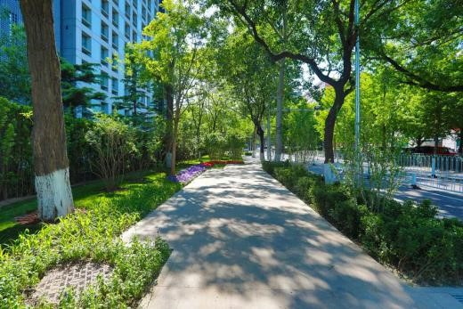3、天安门东南角绿地：位于广场东侧路和前门东大街十字路口东北角广场绿地，总面积3291平方米。（已对外开放）
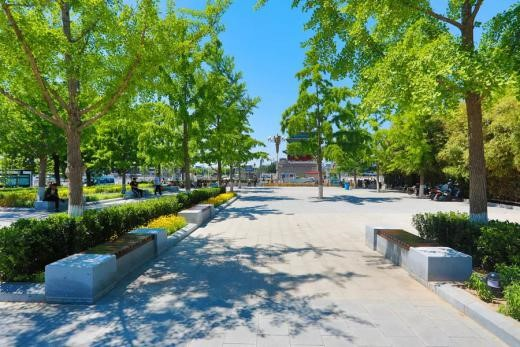4、同仁医院口袋公园：位于崇文门路口东北角、同仁医院东侧，改造面积约为1308平方米，原为拆违腾退绿地及临时停车场。（已对外开放）
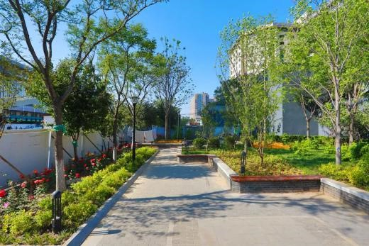5、磁器口口袋公园：位于崇外大街磁器口路口西北角，是地铁5号线施工腾退绿地，面积约3130平方米。（已对外开放）
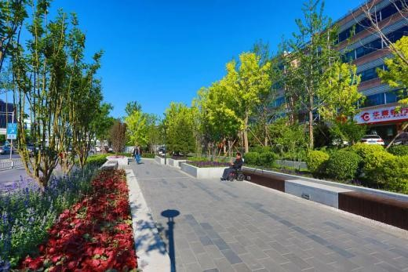6、广渠门口袋公园：位于广渠门桥西北角，是拆违腾退绿地，地块南北向狭长地块，呈反向的“L”形，为总面积1700平方米。（已对外开放）
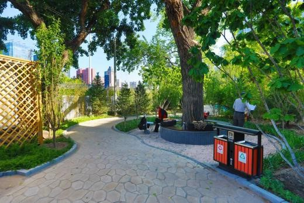7、天坛东门口袋公园：位于体育馆西口，毗邻天坛东门地铁站出入口。绿地东西向呈长条形，总长220米，总面积约1350平方米。（近期将投入使用）
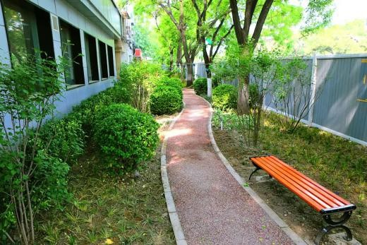8、幸福大街南口口袋公园：位于幸福大街路口东南角，改造总面积约375平方米。（已对外开放）
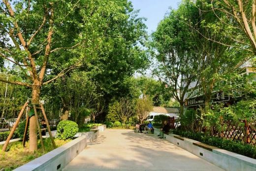9、香河园口袋公园：位于北京市东城区东北二环外侧，毗邻清水苑社区。地块为绿化代征地，总面积9450平方米。（已对外开放）
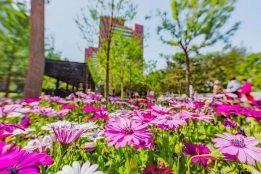10、天坛4个口袋公园：四处公园总面积1525平方米，分别位于祈年大街东侧、金鱼池小区东侧以及北京口腔医院门前。（已对外开放）
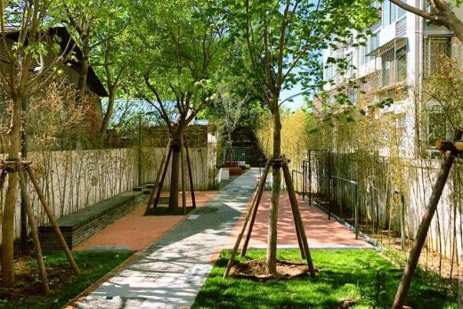